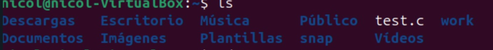

Comandos Linux
Sistemas Operativos
Docente: Fatima Alejandra Vela Torres
Team:
Tammy Karmina Espinosa Rosete
Valeria Itzel Arias Cardenas
Alexia Nicol Correa Castelan
Directorio de inicio (/home/usuario)
Es donde se almacenan los archivos personales del usuario.
/bin → Programas esenciales

/etc → Archivos de configuración

/var → Archivos variables (logs, correos)

/usr → Programas y librerías no esenciales

/tmp → Archivos temporales

Comandos básicos de navegación
pwd - Muestra el directorio actual
ls - Lista archivos y carpetas
cd nombre/ - Cambia a un directorio
cd .. - Sube un nivel
cd ~ - Va al directorio de inicio del usuari
cd / - Va al directorio raíz
ls -l - Lista con detalles

ls -a - Incluye archivos ocultos

ls -lh - Lista con tamaño legible

Listado de archivos y directorios
Comando ls: El comando ls lista los archivos y directorios en el directorio actual.
ls -a: Lista todos los archivos y directorios, incluidos los ocultos.

ls -l: Muestra información detallada sobre los archivos y directorios, como permisos, propietario tamaño, etc.
ls -h: Muestra el tamaño de los archivos en un formato legible por humanos (K, M, G, etc.).

ls -R: Lista recursivamente, mostrando los archivos y directorios en subdirectorios.

ls -t: Muestra los archivos y directorios ordenados por fecha de modificación, con los más recientes primero.

ls -r: Invierte el orden de la lista.

ls -i: Muestra el número de inodo de cada archivo o directorio

ls -s: Muestra el tamaño de los archivos en bloques

ls -d: Muestra solo el directorio en lugar de su contenido.
ls -F: Agrega caracteres especiales al final de los nombres de archivo para indicar su tipo.